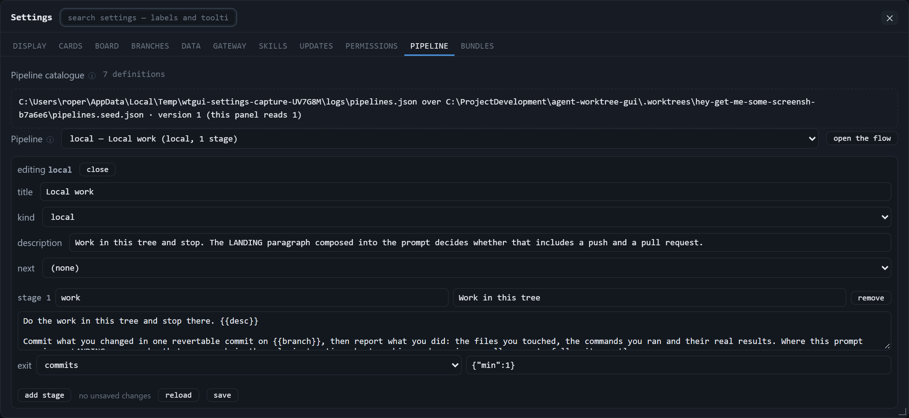
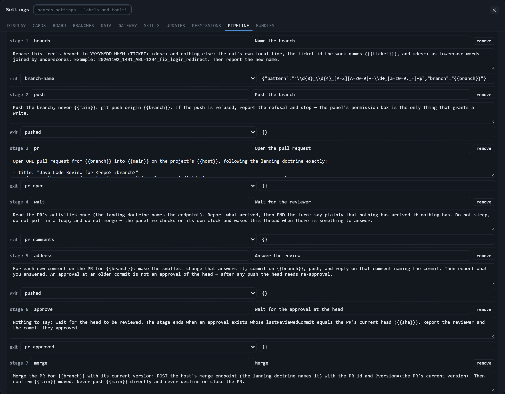
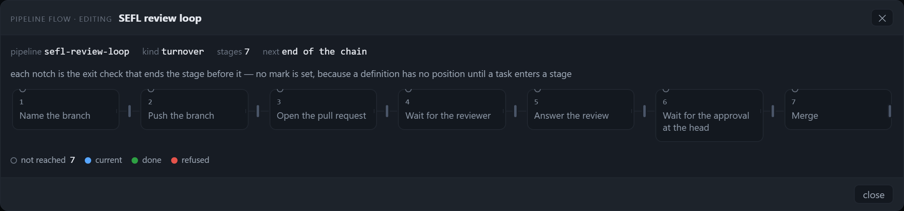
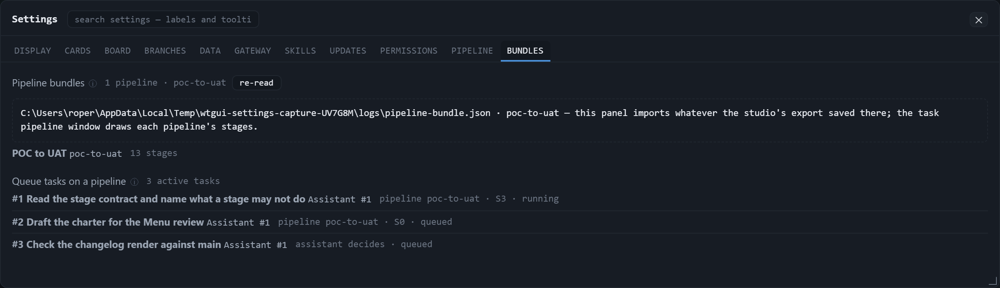

What the fixture is. A throwaway panel on its own port: the shipped catalogue
(pipelines.seed.json, seven definitions) with no reader pipelines.json over it; the repo's own
pipeline-bundle.seed.json copied in as the studio bundle (POC to UAT, thirteen stages); and one assistant
queue holding three tasks — two on poc-to-uat, one the assistant decides. The Settings window is opened at
1250 px wide through the same wtgui.settingsRect store a reader's drag writes, and each frame's height is
fitted to the tab it shows (a short tab in a tall window is a picture of empty space).
| Frame | What it is | Window | Image | sha256 |
|---|---|---|---|---|
| pipeline-tab.png | Settings › Pipeline as it opens | 1250 × 576 | 2500 × 1152 | 6e09bea5… |
| pipeline-stages.png | that tab, scrolled to the stage cards | 1250 × 976 | 2500 × 1952 | f8351fe7… |
| pipeline-flow.png | "open the flow" — the definition drawn | 1120 × 263 | 2240 × 526 | 325def5f… |
| bundles-tab.png | Settings › Bundles | 1250 × 360 | 2500 × 720 | 9aef9f0f… |

pipelines.json (absent here, so the seed is in force) over pipelines.seed.json, at
version 1, which is the version this panel reads. The picker holds all seven ids
(local, investigate, turnover, github-investigate,
sefl-investigate, github-force-merge, sefl-review-loop) and opens the first one,
local: one stage, prompt 355 characters, exit check commits. The tab's own status line says
no unsaved changes. The prompt box is a three-row textarea (12 px) that scrolls, so a longer instruction shows
its first lines and the rest is one wheel-turn away — that is the editor's shape, not a clipped frame.

sefl-review-loop (kind turnover), each card one stage.
This is the same window scrolled 309 px into its body, so the head and the tab strip stay put and the frame begins at a
stage boundary: branch → push → pr → wait → address →
approve → merge. Every card carries the stage's id and title, its whole prompt, and the exit
check that ends it plus that check's parameters as JSON (stage 1's branch-name pattern is the visible
one). The editor is 1 146 px tall here; six of the seven cards are fully in the frame and the seventh's prompt is
the last line of it — the body scrolls, and this is one honest frame of that.

pipeline sefl-review-loop · kind turnover · stages 7 · next end of the
chain, and the card reports all 7 stages and 7 notches in view at 1 120 × 263.

#1 … pipeline poc-to-uat · S3 · running, #2 … pipeline poc-to-uat · S0 · queued, and
#3 … assistant decides · queued — the default path, spelled as the record spells it
(pipelineRun: null), never as "unassigned". No row here is refused; a broken export would print the
loader's own code (refused — dangling-reference) where the summary is, which is the gate's case, not this
capture's.
They are pictures, not proofs. Nothing here types into the editor, saves, or forces a refusal — those are the two
gates' jobs: tools/verify-pipelines-tab.mjs (a keystroke surviving a repaint, a save reaching the live file,
a refusal whose findings land inline without losing the draft) and tools/verify-bundles-tab.mjs (a broken
bundle's refusal code, a task on the default path, the task pipeline window the press opens). Run those for a verdict;
run this for a picture.
node tools/capture-settings-pipeline.mjs node tools/capture-settings-pipeline.mjs --shots docs/assets/pipeline-tabs --json docs/assets/pipeline-tabs/capture.json node tools/capture-settings-pipeline.mjs --root <a git archive export> --dsf 1 # another build, 1:1 pixels